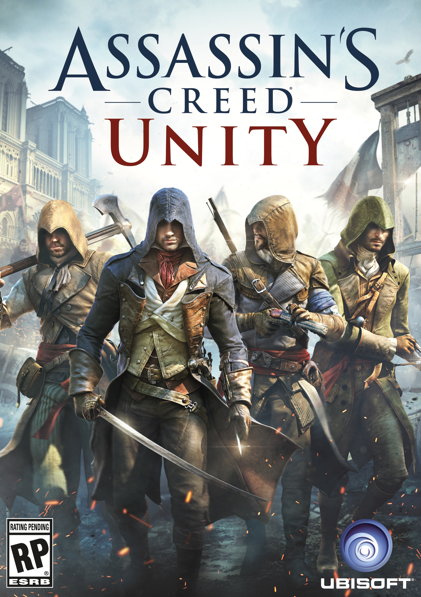
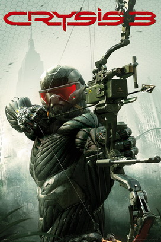
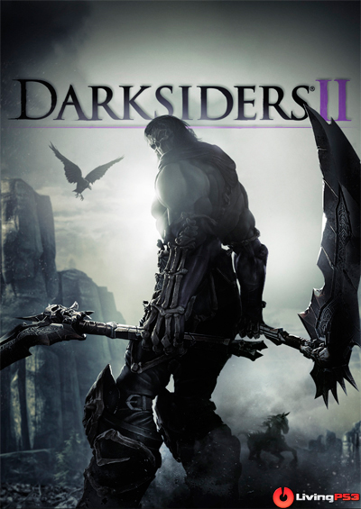
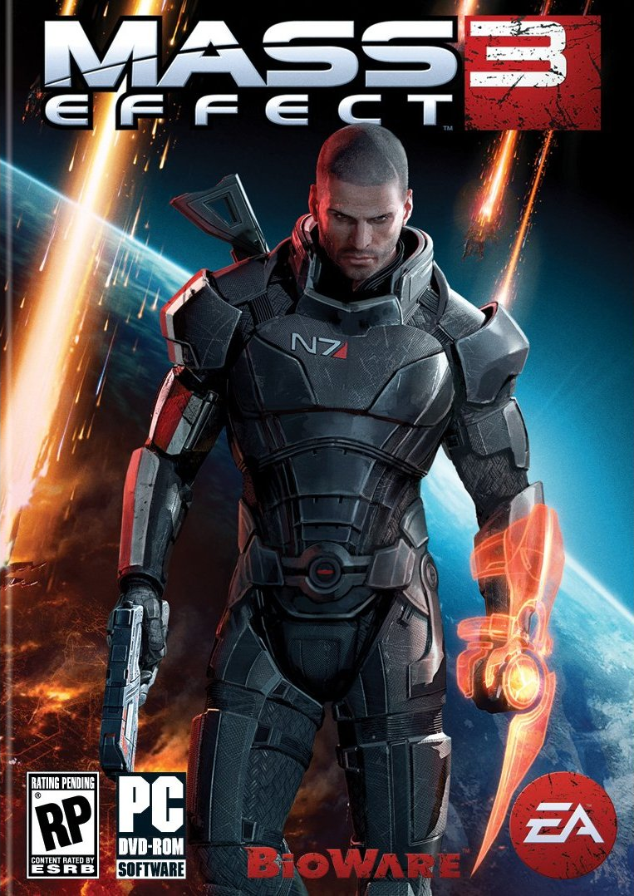
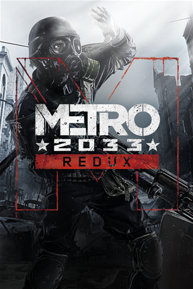

|
En Far Cry 4, nos encontraremos en Kyrat, un lugar precioso, peligroso y majestuoso de los Himalayas. Teniendo que destronar a un susodicho rey auto-nombrado, utilizaras una cantidad impresionante de armas, vehículos y animales. Es momento de escribir tu propia historia en este exótico mundo abierto. ¡MÁS INFORMACIÓN! |
 FARCRY4 24.99€ |
|
Es un juego de la saga que se remonta a la Revolución francesa, por primera vez con un modo cooperativo para 4 jugadores que originalmente se lanzaría el 28 de octubre de 2014, pero Ubisoft decidío atrasarlo para afinar detalles y de esta manera salir al mercado conjuntamente con "Assassin's Creed Rogue" el 13 de noviembre para Europa y el 11 de noviembre para EUA y con su precontenido exclusivo más la explosiva misión de la «Revolución química». Uno de sus cuatro protagonistas se llama Arno Dorian. ¡MÁS INFORMACIÓN! |
 ASSASSIN UNITY 27.99€ |
|
Cúpula de Nueva York, año 2047. Tras la invasión Ceph, la ciudad de Nueva York se encuentra aislada del resto del mundo por una cúpula hecha con nanotejido. Una facción militar secreta se ha escondido en las ruinas de la ciudad. Además 2 usuarios del nanotraje aparecerán misteriosamente aliados a los alienígenas. Tu deber es descubrir sus planes y destruirlos. Además contaremos con el regreso de Psycho, protagonista de Crysis Warhead. También contaremos con la participacón de Claire Fontaine, la gobernadora militar de Nueva York que necesita a Prophet para acabar con CELL y el retorno de Karl Ernst Rasch que hace su aparición al final de Crysis 2, con el cual nos llevaremos alguna sorpresa. ¡MÁS INFORMACIÓN! |
 CRYSIS3 9.99€ |
|
Darksiders II se lleva a cabo en paralelo a el juego anterior. En el prólogo, se revela que los cuatro jinetes (Guerra, Furia, Muerte y Disputa) son los últimos de los Nefilim, las fusiones de ángeles y demonios que libraron una guerra sangrienta en el resto de la creación, con el fin de preservar el equilibrio del Universo, ordenados por el Consejo Abrasado, recibirían increíbles poderes a cambio de sacrificar al resto de los Nefilim. Muerte atrapó las almas de sus hermanos caídos en un amuleto, ganando el título de Fratricida, Ejecutor, etc. Y dando el amuleto al padre cuervo (aunque mantuvo esta acción en secreto, ya que el Consejo ordenó destruir las almas de los Nefilim). ¡MÁS INFORMACIÓN! |
 DARKSIDERS II 12.99€ |
|
La historia de Dark Souls II comienza con una espectacular secuencia inicial que ya nos deja con ganas de saber más de su trasfondo. Aunque el mundo es el mismo que el de Dark Souls, no es una continuación directa y ningún usuario debería tener problema en quedar enganchado a su universo, ni siquiera quienes tengan total desconocimiento de ambos Souls. El argumento gira en torno a un nuevo protagonista... ¡MÁS INFORMACIÓN! |
 DARK SOULD II 18.99€ |
|
Dragon Age: Inquisition tendrá lugar en el continente de Thedas, el mundo fantástico en el que tienen lugar los dos juegos anteriores. El juego cubrirá más territorio que sus predecesores, con un mapa siendo descrito como unas cuatro o cinco veces más grande que Ferelden, el escenario del primer juego de la serie.11 Los desarrolladores dijeron que el próximo juego probablemente sería más "francés", lo que... ¡MÁS INFORMACIÓN! |
 DRAGON AGE III 35.99€ |
|
La Tierra está ardiendo. Llegando más allá del espacio conocido, una raza de terribles máquinas ha comenzado la destrucción de la raza humana. Como Comandante Shepard, marine de ... ¡MÁS INFORMACIÓN! |
 MASS EFFECT 3 7.99€ |
|
"Nací en Moscú. Pero no recuerdo nada de aquella época, no era más que un crio cuando las llamas del fuego nuclear devoraron el viejo mundo. Cuarenta mil personas nos salvamos refugiándonos en las estaciones del metro... en las entrañas de la ciudad. Ahora, veinte años después, sólo un puñado de valientes se atreve a subir para recibir el abrazo de un invierno eterno... ¡MÁS INFORMACIÓN! |
 METRO 8.99€ |
|
Si tienes dudas de quienes somos lee nuestra historia aquí. |
| ¿Quienes somos? |